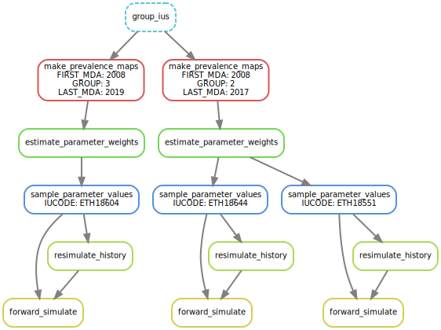

Overview¶
The pipeline can be divided into two distinct stages:
The parameter inference stage is about estimating a probablity distribution for values of the epidemiological model parameters, using the Adaptive Multilevel Importance Sampling algorithm. This stage yields a collection of parameter values, together with their corresponding statistical weight.
The model simulation stage then forward simulates the model for a arbitrary number of parameter values sampled in the ensemble generated by the inference stage.
The pipeline can be visualised with the following task graph.
The above depicts a pipeline with two IU groups, defined by the prevalence level value, year of first MDA and year of last MDA (See IU grouping).
Parameter inference stage¶
The parameter inference stage is made of three steps:
Grouping of Implementation Units (IUs).
Derivation of prevalence maps (one per group) based on original dataset.
Execution of the Adaptive Multivelel Importance Sampling (AMIS) algorithm.
IU grouping¶
The parameter inference (AMIS) algorithm is executed over several groups of IUs, instead of the whole dataset. This allows to divide the computation into independent pieces of work that can run in parallel.
Currently, IUs are grouped together according to values of first MDA
year, last MDA year, mean prevalence level. For instance, IU a group
(first_mda=2008, last_mda=2019, level=3)1 groups together IUs for
which the first MDA occurs in year 2008, the last MDA in year 2019,
and for which the mean infection prevalence is between 20% and 30%
(assuming a prevalence level spans a 10% prevalence range). IU
grouping will likely become configurable in the near future.
Prevalence maps¶
The input of the AMIS algorithm is a prevalence map, which is derived from the original dataset. A prevalence map contains K samples of prevalence value for each IU in the dataset (or IU group). It is stored in the CSV format with N rows and K columns.
Adaptive Multilevel Importance Sampling (AMIS)¶
Given a prevalence map and a model input file (both for a given IU group), the AMIS algorithm generates an ensemble of possible model parameter values, along with their associated statistical weight.
beta |
ETH18651 |
ETH19212 |
ETH19149 |
ETH19177 |
ETH19176 |
… |
|---|---|---|---|---|---|---|
0.12 |
0.04 |
hello |
0.55 |
a |
a |
… |
0.34 |
0.12 |
0.32 |
0.67 |
a |
a |
… |
0.18 |
0.45 |
0.23 |
0.23 |
a |
a |
… |
0.26 |
0.23 |
0.23 |
0.45 |
a |
a |
… |
0.56 |
0.76 |
0.23 |
0.29 |
a |
a |
… |
0.22 |
0.23 |
0.23 |
0.38 |
a |
a |
… |
0.75 |
0.34 |
0.23 |
0.59 |
a |
a |
… |
… |
… |
… |
… |
… |
… |
… |
In this example, the first column indicates sampled values for the \(\beta\) parameter of the trachoma model. The following columns contain the associated statistical weight for these values, for each IU in the IU group.
Model simulation stage¶
The model simulation stage is made of three steps:
Selection of model parameter values.
Model resimulation from START_YEAR to END_YEAR.
Model forward simulation.
Selection of model parameter values¶
The forward simulation provides an ensemble forecast of the spread over a collection of \(n\) values of the model parameter. These values are sampled within the ensemble generated by the AMIS algorithm, according to their statistical weight.
Model resimulation to END_YEAR.¶
The AMIS algorithm relies on the simulation of the model from START_YEAR to END_YEAR. However, storing the final simulation state for each and every generated parameter values would require a large amount of storage. This storage would mostly be waster as only a subset of generated parameter values are selected for forward simulation.
Instead, the random generator seed is recored for each generated paramter value, allowing the (re)simulation of the model over START_YEAR and END_YEAR for the selected parameter values. The output of the resimulation is a file contained a serialised representation model of the model state (e.g. a Python pickle file).
Forward simulation¶
Finally, the model can be simulated up to an arbitraty year using the recorded state at END_YEAR as the initial condition.
Work distribution¶
The parameter inference stage is executed each IU group in the original dataset. These executions are indepent and can be executed in any order, including in parallel if computational ressources allow.
Similarly, the model simulation stage is performed for a single geographical location (Implementation Unit), independently of the others. These model simulations can therefore be executed in any order, including in parallel.